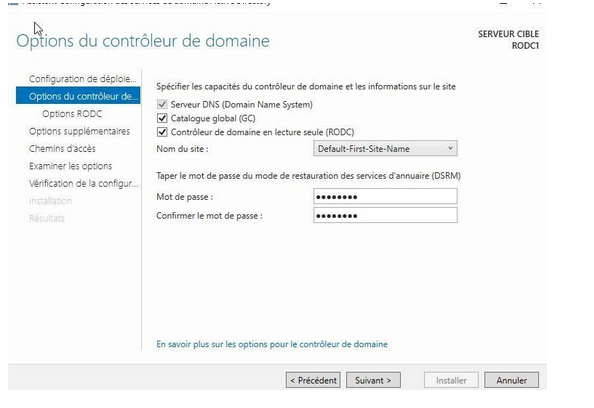
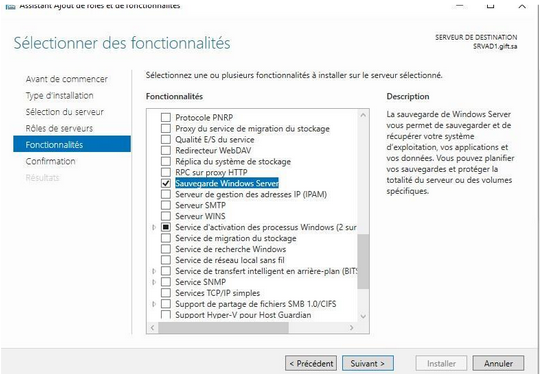

Architecture & Sécurisation avancée d'un domaine Active Directory
Introduction : Ce projet personnel est dédié au déploiement d'une infrastructure d'identité résiliente et hautement sécurisée basée sur Windows Server 2022. L'objectif est d'assurer une gestion centralisée rigoureuse d'un parc informatique d'entreprise, en limitant la surface d'attaque grâce à des stratégies de restriction avancées et une topologie multi-site.
🎯 Apprentissages Critiques :
-
Compétence RT1 : Administrer les réseaux et l'Internet
• AC21.03 : Déployer des postes clients et des solutions virtualisées adaptées à une situation donnée
• AC21.04 : Déployer des services réseaux avancés (Annuaire AD DS / Réplication / DNS direct)
1. Description du projet
Le projet a consisté à concevoir de bout en bout l'architecture logique et physique d'un domaine d'entreprise. Les opérations majeures se déclinent en trois grands axes :
- Fondations et Haute Disponibilité : Préparation des serveurs, configuration d'un premier contrôleur de domaine (DC) maître et ajout d'un second contrôleur pour fiabiliser l'architecture locale par réplication. Structuration de l'arborescence des Unités d'Organisation (OU), déclaration des ressources et jonction des postes clients au domaine (AC21.03).
- Analyse de Sécurité et Organisation Multi-site : Audit de la configuration via l'outil d'analyse des bonnes pratiques Microsoft (BPA). Organisation logique de la topologie pour un second site géographique distant en déployant un Contrôleur de Domaine en Lecture Seule (RODC) pour protéger l'annuaire en cas de compromission physique du site distant.
- Durcissement du Parc (Hardening) et Sauvegarde : Application d'une politique de mots de passe affinée (PSO), mise en place de Stratégies de Groupe (GPO) restrictives (audit et restriction des accès réseau entrants, attribution stricte des droits d'ouverture de session) et blocage de l'exécution de logiciels non autorisés (AppLocker/SRP). Le projet intègre enfin une stratégie de sauvegarde de l'état du système (System State Backup) pour prémunir l'entreprise de tout sinistre.
2. Présentation et justification des résultats
La conformité de l'architecture a été validée par des tests d'application de GPO de restriction et par la vérification de la réplication unidirectionnelle du contrôleur RODC.
Preuve 1 : Éditeur de gestion des GPO démontrant le durcissement du parc (restrictions des accès réseaux entrants et blocage des exécutables non autorisés).

Preuve 2 : Console "Sites et services Active Directory" validant le déploiement du RODC et l'impossibilité d'écrire des modifications depuis la filiale distante.

Preuve 3 : Rapport de succès de l'outil Windows Server Backup confirmant la sauvegarde complète de l'état du système (System State) contenant la base AD.
3. Conclusion & Analyse Réflexive
📊 Auto-évaluation sur les Apprentissages Critiques :
Les AC21.03 et AC21.04 sont acquis. J'ai prouvé ma capacité à déployer de manière virtuelle des machines clientes et des serveurs redondants (AC21.03), tout en administrant des fonctions avancées de l'infrastructure d'entreprise comme la topologie multi-site, la réplication et la sécurisation par stratégies d'objets (AC21.04).
🧠 Analyse Réflexive :
Description des faits : Installation de deux contrôleurs locaux, structuration en OU, configuration d'un RODC distant, application de GPO de restriction logicielle d'accès, et réalisation d'une sauvegarde System State.
Expérience subjective : L'implémentation du RODC (Read-Only Domain Controller) a été l'étape la plus enrichissante. Comprendre la gestion de la politique de réplication des mots de passe (PRP) — c'est-à-dire décider quels secrets d'utilisateurs ont le droit d'être mis en cache locale sur le site distant — m'a demandé une analyse fine du compromis entre la sécurité (si le serveur est volé) et la disponibilité du réseau (si le lien WAN coupe).
Analyse et évaluation : L'utilisation du Best Practices Analyzer de Microsoft m'a fait réaliser qu'un annuaire fonctionnel n'est pas forcément un annuaire sécurisé. Les alertes m'ont poussé à corriger la configuration des redirecteurs DNS et à affiner la politique de mot de passe (PSO) pour les comptes de services.
Conclusions et plans pour l'avenir : Ce projet m'a donné d'excellentes compétences en ingénierie des systèmes Microsoft d'entreprise. Pour aller plus loin, j'aimerais lier cette infrastructure Active Directory à une solution d'authentification unique moderne de type Azure AD (Entra ID) afin d'étudier les mécanismes de synchronisation hybride Cloud/On-Premise.